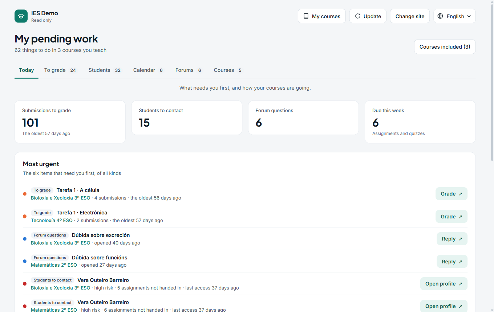
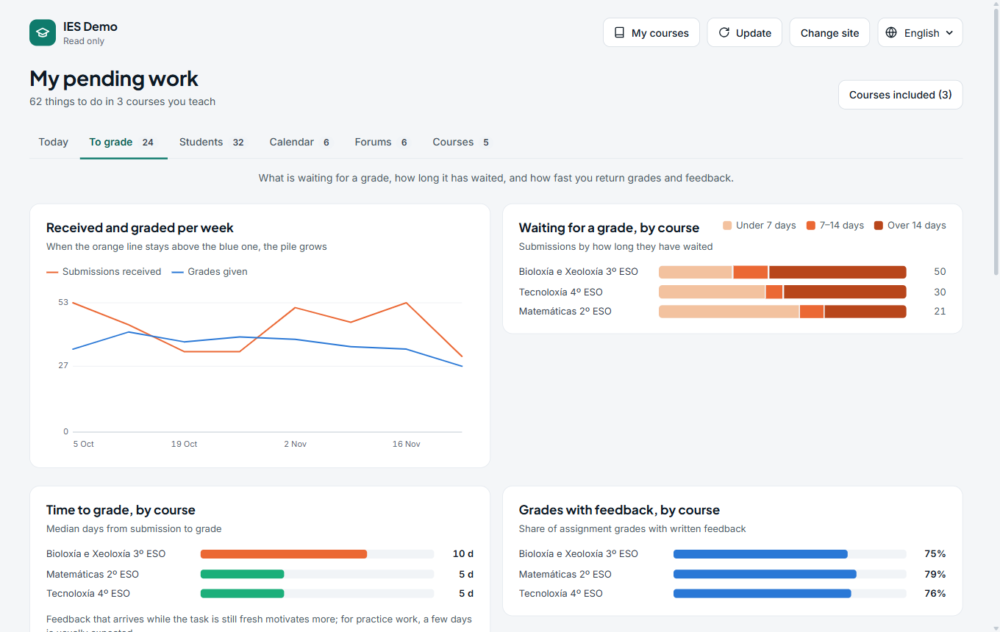
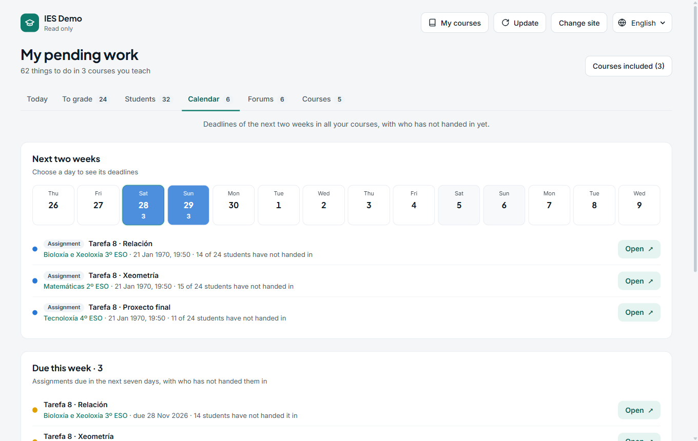
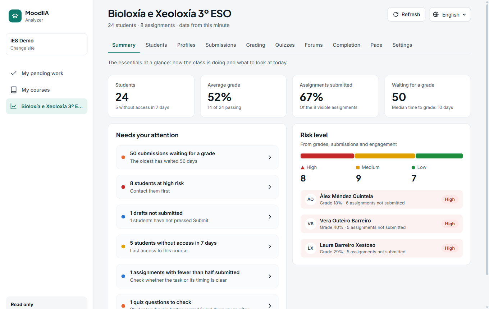
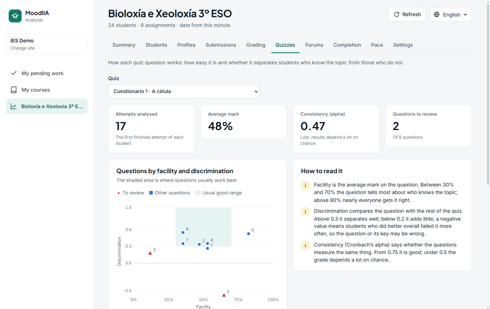
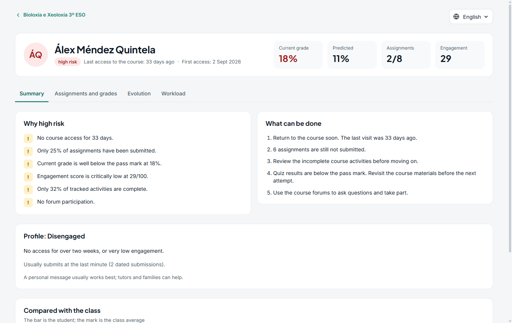

Your pending work first
One screen across the courses you teach: what to grade and since when, who to contact, forum questions with no reply, deadlines of the next two weeks. Each item opens its Moodle page in your browser.
Version 0.2.0 is available.
A desktop app for teachers. It opens on everything waiting for you across your courses — work to grade, students to contact, unanswered forum questions, deadlines — and analyses each course and student: submissions, grades, quizzes, forums, completion and risk. It works on any Moodle site that allows the Moodle app, and only reads.
One screen across the courses you teach: what to grade and since when, who to contact, forum questions with no reply, deadlines of the next two weeks. Each item opens its Moodle page in your browser.
Submissions and their timing, grading time, quiz question statistics, the forum reply network, completion, profiles and risk, in Galician, Spanish or English.
Sign in as you do in the Moodle app and the app gets the same kind of token. No plugin or browser extension is needed, and browser CORS limits do not apply because requests are made by the app.
The app refuses every operation that changes Moodle data. It reads course structure, assignments, quizzes, forums, grades and completion.
If the token cannot read a source, the analysis still runs and the app lists what it could not read and why.
These screenshots use a demonstration site with fictitious students.






No installers have been published yet. Releases will appear on the GitHub releases page.
chmod +x) and run it.Each release lists the SHA-256 checksum of every file.
Course and student data stay on your computer. The app has no server and sends nothing to MoodlIA. Tokens never reach the app's interface and are not written to disk when the system cannot encrypt them.